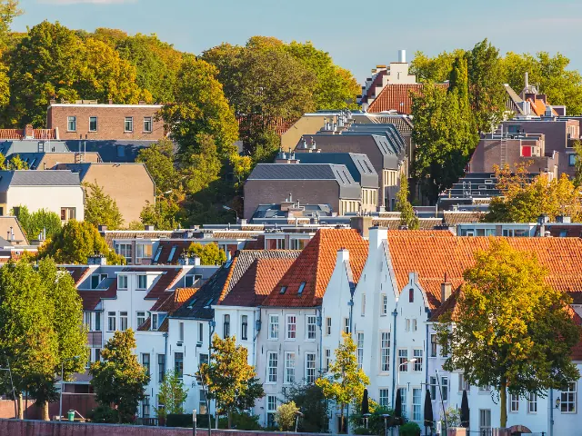

Wonen in Nijmegen: waarom een woning zoeken hier aanvoelt als daten in een overvolle club
Gepubliceerd op 8 mei 2025

De magie (en stress) van een woning vinden in Nijmegen
Woning zoeken in Nijmegen voelt tegenwoordig een beetje als daten in een drukke club: veel gegadigden, weinig écht goede opties, en je moet er op tijd bij zijn voordat iemand anders ermee vandoor gaat. Of je nu op zoek bent naar een studio huren nijmegen of liever een iets ruimer appartement huren nijmegen, je staat er niet alleen voor. De populariteit van de stad maakt het vinden van woonruimte een kleine survivaltocht – maar wel eentje waar je met de juiste mindset en aanpak gewoon levend (en zelfs goed gehuisvest) uit kunt komen.
Waarom Nijmegen zo populair is
Nijmegen is meer dan alleen de stad van de Vierdaagse en de Radboud Universiteit. Het is een stad met karakter: historisch én vooruitstrevend, klein genoeg om overzichtelijk te zijn, maar groot genoeg om niet te vervelen. Het centrum barst van de leuke koffietentjes, vintage winkels en cultuur. Daarnaast zit je zo in de natuur – van de Ooijpolder tot de heuvels van Berg en Dal. Geen wonder dus dat steeds meer mensen zich hier willen vestigen.
De realiteit van de woningmarkt
Drukte en dynamiek
De vraag naar woonruimte is groter dan het aanbod – en dat merk je. Woningplatforms staan vol met reacties en als een woning ‘vers’ online komt, kun je het klokje erop gelijk zetten dat je binnen het uur moet reageren. Makelaars spreken van wachtrijen, lotingen en zelfs ‘woningpitch-momenten’. De concurrentie is real, zeker in de lagere en middenhuur.
Prijsbewust zijn
De gemiddelde huurprijs voor een studio of appartement in Nijmegen is de afgelopen jaren flink gestegen. Studio’s liggen vaak tussen de 700 en 900 euro per maand, afhankelijk van locatie en luxe. Appartementen zijn al snel 1000+ euro, zeker als ze in het centrum liggen of onlangs gerenoveerd zijn. Hou er dus rekening mee dat ‘betaalbaar’ in Nijmegen vaak relatief is.

Creatief zoeken = sneller vinden
Afwijken van de gebaande paden
Wil je echt kans maken op een fijne plek? Dan loont het om creatief te zijn. Kijk bijvoorbeeld ook buiten de populaire wijken zoals Bottendaal en Nijmegen-Oost. In Lent, Hatert of zelfs net buiten de stadsgrenzen vind je vaak betere deals én minder concurrentie.
De kracht van netwerken
Woning zoeken is soms net als werk zoeken: wie je kent is belangrijker dan wat je weet. Laat dus aan vrienden, collega’s en zelfs vage kennissen weten dat je iets zoekt. Veel verhuurders adverteren niet eens online, maar verhuren via via – en dáár kun jij je voordeel mee doen.
Tip: zoek op momenten dat anderen slapen
Letterlijk. Veel platforms updaten hun aanbod in de late avond of vroege ochtend. Door jezelf een alert in te stellen of om 07:00 uur even snel te checken, ben jij misschien de eerste die reageert – en dat is vaak de sleutel.
Tot slot: het is het waard
Ja, het is gedoe. Ja, het is soms frustrerend. Maar als je eenmaal je plek hebt gevonden, begrijp je waarom zoveel mensen het ervoor over hebben. Nijmegen is een stad waar je je snel thuis voelt – warm, levendig en eigenzinnig.
Dus of je nu een studio huren nijmegen wilt om je eigen rustplek te creëren, of liever een appartement huren nijmegen om samen te wonen of net wat meer ruimte te hebben – laat je niet ontmoedigen. De aanhouder wint. En die wint dan ook wel meteen een stad die voelt als een groot dorp, maar leeft als een metropool in het klein.
Terug naar de beginpagina
BEKIJKMakelaars in Nijmegen
Zin om te beginnen? In onze bedrijvengids vind je alle 48 makelaars in Nijmegen, met openingstijden, kenmerken en een kaart.
Bekijk alle 48 makelaars in Nijmegen
Heb je zelf een makelaar? Laat je hier uitlichten.